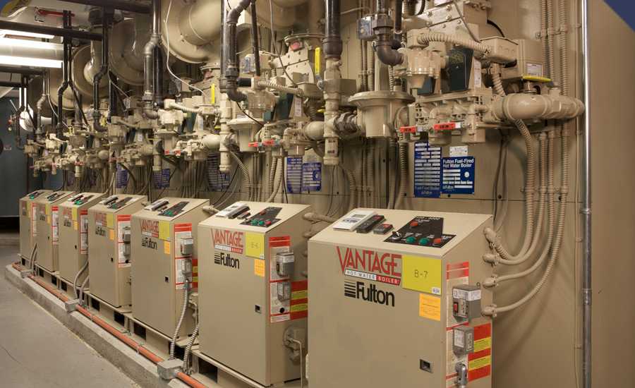
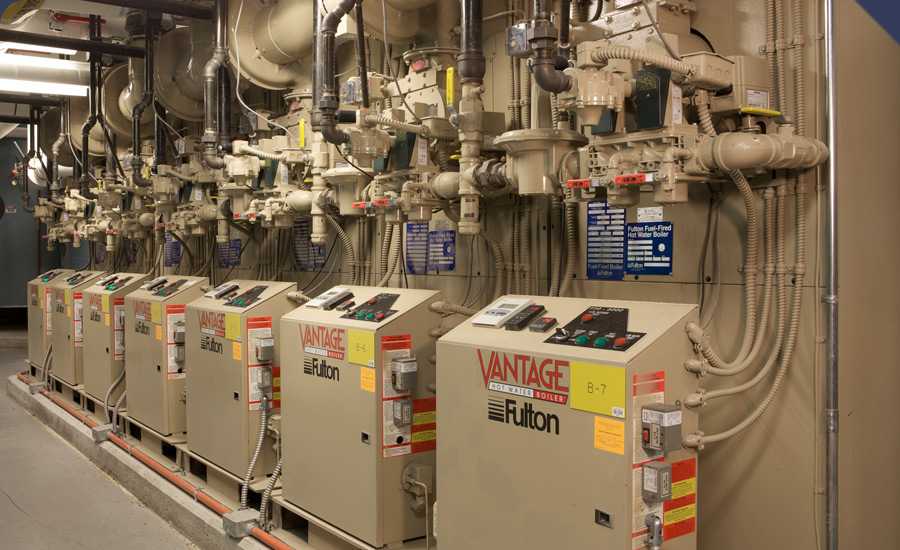
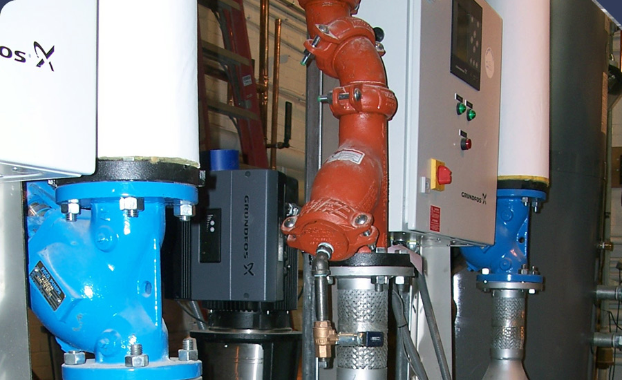
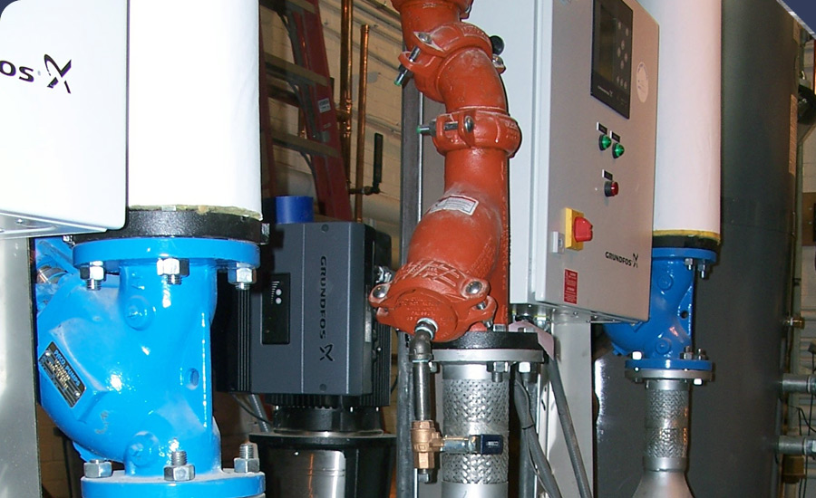

Products
Pumps
Click on the company name for further details.
- Grundfos
- Grundfos manufactures the world’s most complete line pumps, including many special purpose pumps, and pumping systems. Grundfos’ commitment to customers continues through their extensive dedication to innovation. With the addition of Paco Pumps, Grundfos is now one of the largest pump manufacturers in the world.
http://www.grundfos.us
- PACO Pumps
- PACO Pumps are manufacturers of the world’s most complete lines of end suction, in-line, split case, non-clog, sump pumps, special purpose pumps, and pumping systems. Now part of the Grundfos family of pumps, Paco Pumps help make Grundfos/Paco one of the largest pump manufacturers in the world.
Each Paco product is designed for low life cycle costs. Through innovative technology, advanced design criteria and proper matching of the pump selection to the specific requirements, Paco creates an very diverse set of pumps to meet the needs of their clients.
http://www.paco-pumps.com


 

 
